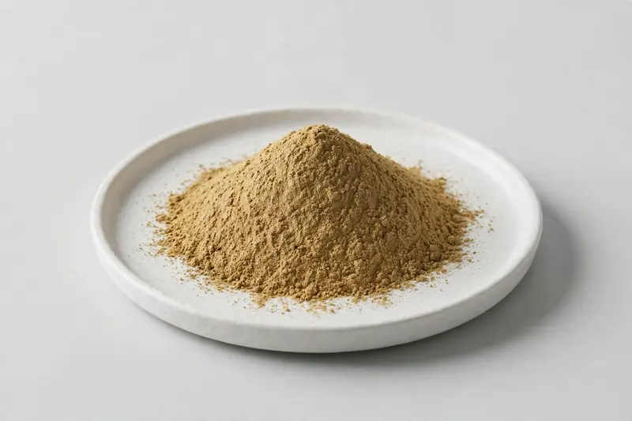

Fennel Seed — aromatic seed extract positioned around anethole grades for digestive wellness and functional beverage formulations.

Overview
Fennel seed extract comes from Foeniculum vulgare seed, a culinary and botanical material with a long trade history in teas and digestive wellness concepts. Buyers most commonly specify grades around anethole content, with ratio extracts also requested. Demand tracks functional beverage and herbal tea development. Working as a Xi'an-based trading company, we source through vetted partner producers; buyers state their target specification and we confirm feasibility honestly rather than assuming availability.
Specifications below reflect commonly requested options in the market — not a stock list. Share your target spec and we'll confirm exactly what we can supply, honestly.
| Specification | Details |
|---|---|
| Botanical identity | Fennel seed extract powder (Foeniculum vulgare seed) |
| Marker compound | Commonly requested spec grades: anethole-defined grades and ratio-type extracts; assay scope agreed per buyer specification |
| Appearance | Brownish-yellow tan fine powder |
| Mesh size | Typically 80–100 mesh (confirm per inquiry) |
| Testing | COA/TDS arranged on request; scope agreed per your spec |
Applications
Documentation
We don't claim in-house labs or certifications we don't hold. COA and TDS documents can be arranged on request, and testing scope is agreed against your specification before supply.
FAQ
Related products
Silybum marianum
Key marker: Silymarin
View specs →Ginkgo biloba
Key marker: Flavone Glycosides
View specs →Panax ginseng
Key marker: Ginsenosides
View specs →Thymus vulgaris
Key marker: Thymol Grades
View specs →Mentha piperita
Key marker: Menthol Grades
View specs →Send your target spec and volumes — we'll respond with a tailored quotation.
Request a Quote